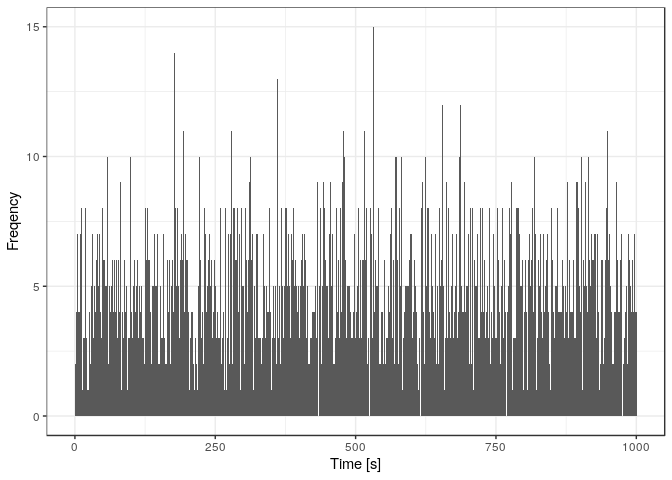
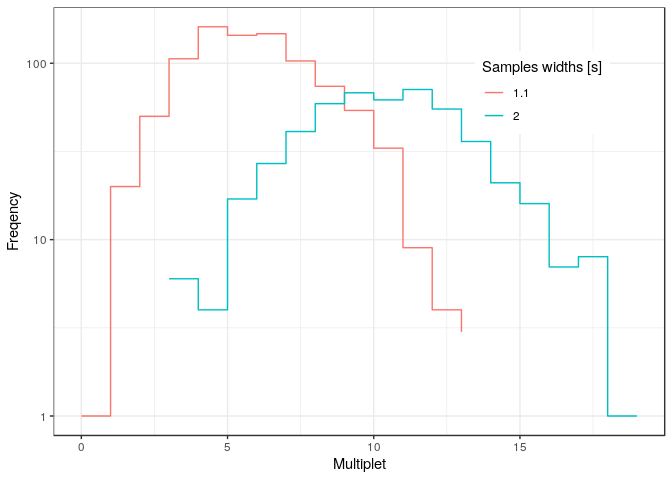

NeutronNoise 
NeutronNoise is a set of tools for neutron noise analysis.
Installation
# Install devtools, if you haven't already. install.packages("devtools") devtools::install_github("IRSN/NeutronNoise")
Features
Artificial signal generation.
Multi-Thread Feynman histogram calculation.
Feynman Variance-to-Mean calculation.
Single, double and triple count rate calculation based on Feynman histogram.
Feynman curve calculatino based on Feynman histogram.
Examples
library(NeutronNoise) # Generate artificial signal of duration 1000 s with about 5 uncorrelated detections/s and plot it artificial_signal(duration = 1000, uncorr_rate = 5) %>% plot()

# Feynman histogram of a signal with no time correlation (poison source) artificial_signal(duration = 1000, uncorr_rate = 5) %>% feynman_hist(samples_widths = c(1.1, 2)) %>% plot()

# Feynman histogram of a signal with correlated detections fs <- data.frame(nu = 0:4,pdf = c(0.1, 0.5, 0.7, 0.2, 0.2)) # Fission multiplicity artificial_signal(duration = 400, hists_rate = 400, fission_multiplicity = fs, k = 0.95, lambda = 0.001) %>% feynman_hist(samples_widths = c(0.1, 0.3)) %>% plot()